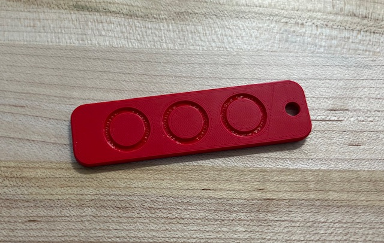
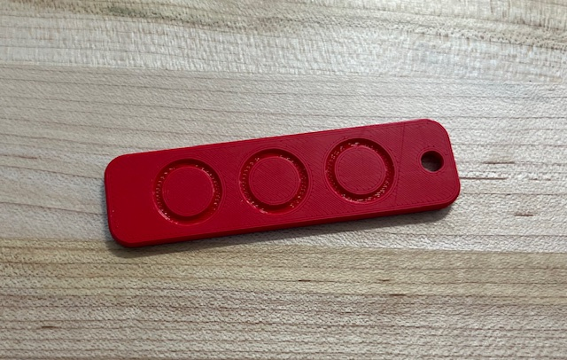
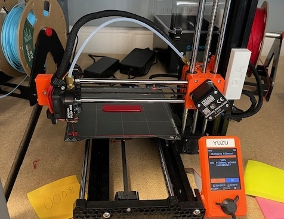
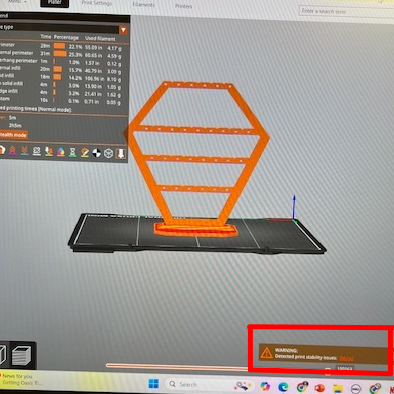

Learning to 3D Print
Designing and Printing a Name Tag
This was my first experience 3D printing in 3 years, so I was surprised by how much I remembered. I decided to play around with the font and location of the words on the name tag. I've never used the PrusaS licer software before, but I appreciated how easy it was to figure out. I had some trouble getting the Prusa MINI+ to print, but once I learned how to ensure that the fillament was loaded correctly, my nametag printed smoothly. While examining it, I realized that there were three circles on the bottom, which was something I hadn't noticed. This taught me to look at a design from all angles before printing, as something may not be noticable just from the front/top view.
.jpg) 

Testing The 3D Printer's Limits
Testing The 3D Printer's Limits
I chose to print an earring holder to test the limits of the Prusa MINI+, although I didn't include the supports that the design recommended. As the earring holder is tall and includes bars acros the piece, foregoing the support meant that the bars did not form correctly. Without the support at the bottom, they sunk, with individual strings of fillament bending instead of creating one smooth bridge across. The Prusa Slicer software recognized that supports were needed, and flashed me a warning when I went to download the G Code. However, as the point of the project was to explore the limits of the printers, I ignored the warning, however I was impressed by the software's ability to recognize errors. From my observations of the printed earring holder, which was shaped similar to a graveyard headstone, I noticed something intersting about how the four bars printed. The top bar and the bottom bar, which had the smallest length, had sunken the least. The middle two bars, which were longer, both had considerably sunken, to the point where the individual strings were evident from feet away. This makes sense as the longer a bar is, the less support the middle receives from the sides, and the more likely it is to droop.

.jpeg)
.jpeg)
Highlighted Image Text: "Detected Print Stability Issues"